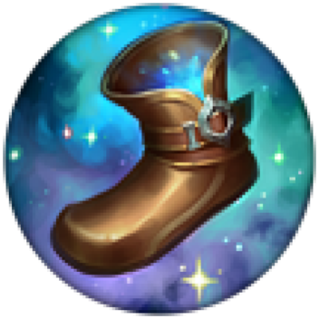
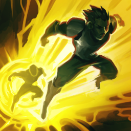
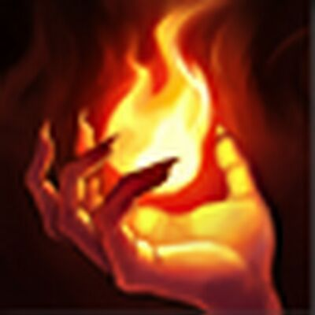
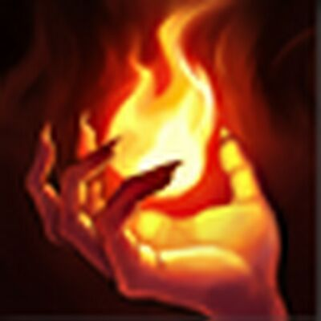

Runes
Resolve
Keystone: Grasp of the Undying
Every 4 seconds in combat, Grasp of the Undying empowers your next auto attack. It will deal bonus Magic damage based on your max health, heals you based on your max health, and permanently increases your max health. This is an ideal keystone for Camille. It helps make Camille, who is a relatively fragile fighter, more durable. The empowered auto attack also synergises well with Camille's short trade and empowered auto attack playstyle.
Shield Bash
Shield Bash gives you bonus resistances while shielded. It also empowers your next auto attack. This synergises with Camille's passive, which shields her briefly when she auto attacks an enemy champion. It triggers often and fits with Camille's empowered auto attack playstyle.
Second Wind/Bone Plating
Second Wind heals you over time after taking damage from enemies. Bone Plating reduces the damage of the next 3 spells or attacks being triggered by taking damage (initial damage not reduced). Second Wind favours lanes where you are taking a lot of poke damage whereas Bone Plating is better against lanes that want to go all-in and will hit you with multiple spells and attacks.
Overgrowth/Unflinching
Overgrowth increases your maximum health when units die near you. Unflinching gives you bonus Tenacity and Slow Resist, which increase with missing health. You should usually take Unflinching into CC heavy comps. Overgrowth is better generally, while Unflinching is better situationally.
Inspiration Secondary
Choose 2 of 3 runes.
Magical Footwear
Magical Footwear gives you free Slightly Magical Footwear (boots) at 12 mins. This time decreases with the number of takedowns. This heavily favours Camille. By getting free boots slightly later in the game, you can buy other items and hit key item spikes quicker.
Biscuit Delivery
Biscuit Delivery gives you a Total Biscuit of Everlasting Will every 2 mins, until 6 mins. Biscuits restore health and mana when consumed. Biscuit Delivery is useful for the laning phase.
Cosmic Insight
Cosmic Insight gives Item and Summoner Spell Haste. This is overall useful, especially since Camille usually takes teleport, which is the highest cooldown Summoner Spell in the game and therefore is heavily affected by the bonus Haste.
Stat Runes
Adaptive Force/Attack Speed
Take Adaptive Force when you are taking more short trades and fights; take Attack Speed in longer fights.
Adaptive Force

Armor/Magic Resist
Take Armor against Physical damage heavy lanes/comps and take Magic Resist against Magic damage heavy lanes/comps.
Items
Starting Items
Doran's Shield Start
Start this in more passive, poke heavy lanes.
Doran's Blade Start

Start this in more aggressive lanes. This is the more common starting item.
Core Items
Divine Sunderer/Trinity Force
Divine Sunderer gives Attack Damage, Health, Ability Haste, and Armor and Magic Penetration. It empowers your next auto attack after using an ability and heals you if the target is a champion. Trinity Force gives Attack Damage, Attack Speed, Health, Ability Haste, and Movement Speed. It grants you bonus Movement Speed after auto attacking, and stacks bonus Attack Damage after attacking a champion. It also empowers your next auto attack after using an ability. Divine Sunderer is often preferred as it favours Camille's short trade playstyle better. It also gives you healing, which is necessary as Camille is a relatively less durable fighter. Take Trinity Force against low health targets that you need to stick closely to using the bonus Movement Speed.
Boots
Plated Steelcaps give Armor and reduce damage of incoming attacks. Mercury Treads give Magic Resist and Tenacity. Ionian Boots of Lucidity give Ability Haste. Choosing which boots to buy is situational. Plated Steelcaps are better into Physical damage and auto attack heavy lanes/comps, Mercury Treads are better into Magic damage and CC heavy lanes/comps, and Ionian Boots of Lucidity are better when the bonus Ability Haste (and therefore damage) is more desirable than durability.
Ravenous Hydra
Ravenous Hydra gives Attack Damage, Ability Haste, and Life Steal. It also allows your auto attacks to cleave, dealing damage to surrounding enemies and healing you. This gives Camille much needed pushing power, which allows you to push and pressure side lanes more. It also gives significant healing, which is necessary for Camille's less durable nature.
Other Items
Maw of Malmortius
Maw of Malmortius gives Attack Damage, Magic Resist, and Omnivamp. It also gives a Magic shield after falling below 30% health. When a shield is given, you are given Omnivamp until the end of combat. The Magic Resist and shield is especially useful against Magic Damage heavy comps. The Omnivamp is useful in giving healing to Camille. Note that Maw of Malmortius cannot be bought with Sterak's Gage.
Sterak's Gage
Sterak's Gage gives Health and Attack Damage. It also gives a shield after falling below 30% health. When a shield is given, you are given Tenacity, both of which decay over time. Sterak's gives significant damage and durability to Camille and is in general a good item. Note that Sterak's Gage cannot be bought with Maw of Malmortius.
Death's Dance
Death's Dance gives Attack Damage, Ability Haste, and Armor. With this item, damage you take is taken over a period of time instead. It also heals you on takedowns. Death's Dance is a good durability and damage item, and the Armor is particularly good into Physical damage heavy comps.
Guardian Angel
Guardian Angel gives Attack Damage and Armor. It revives you upon death with 50% base health and 30% max mana after 4 seconds. This is an extremely useful item as it gives Camille more damage and Armor, and allows her to dive into teamfights more freely and aggressively.
Summoner Spells
You will almost always go Teleport. It is a good Summoner Spell for top laners, as it allows you to return to lane quicker and thereby control it, and it allows you to impact the rest of the map. Teleport also synergises with Camille's split push nature well.
Teleport/Flash
Flash instantly teleports you a short distance. It is useful for chasing kills and escaping death. Take Flash when there are key skillshots that need to be dodged.
Teleport/Ignite
 

Ignite deals True Damage over a period of time, and also applies Grievous Wounds. It is useful for getting and finishing kills. Take Ignite in volatile matchups and lanes where you can look for kills, and whenever you don't need Flash.